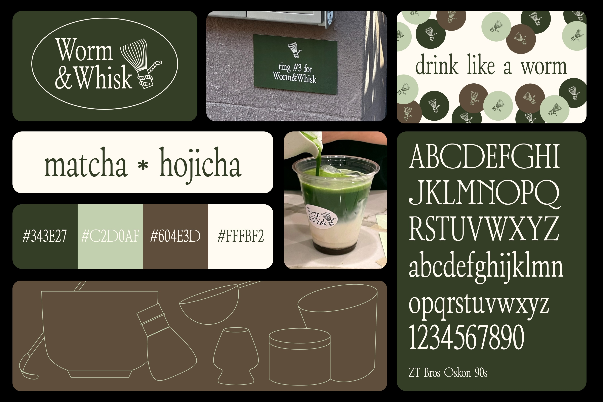
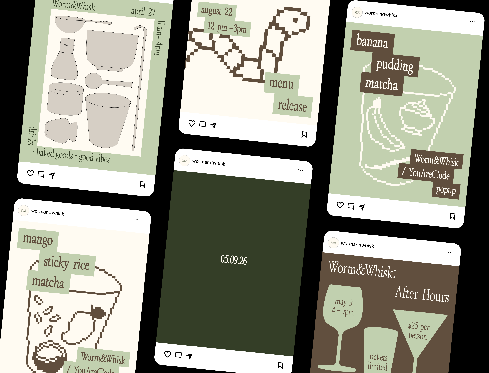
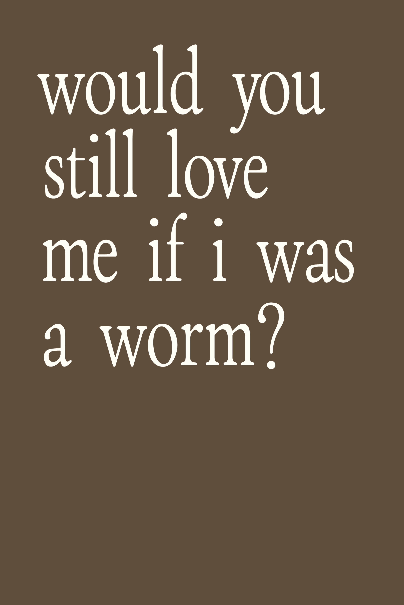
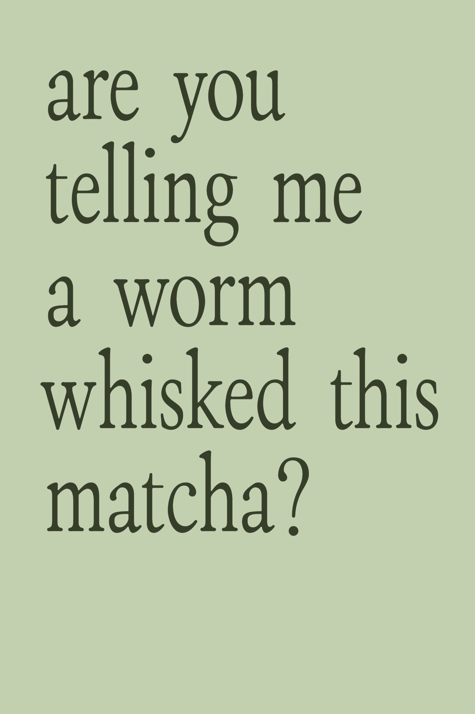
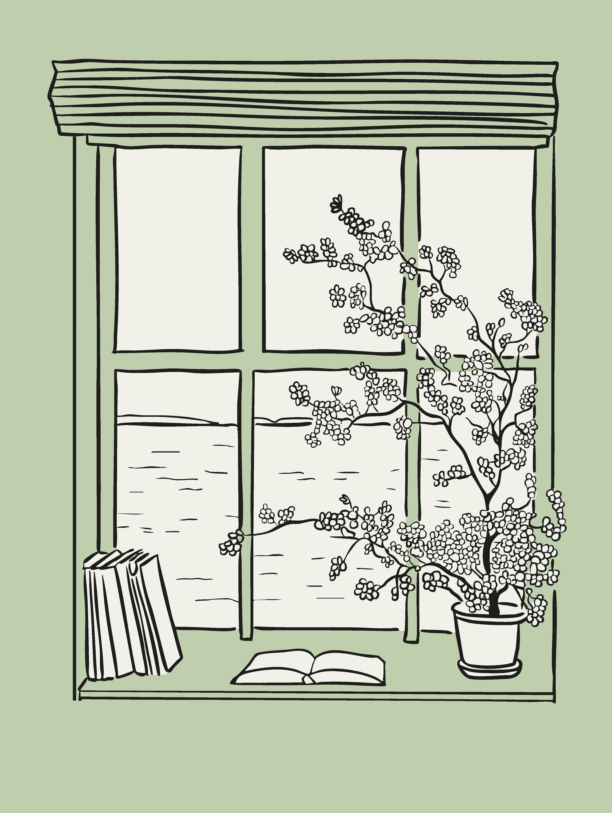
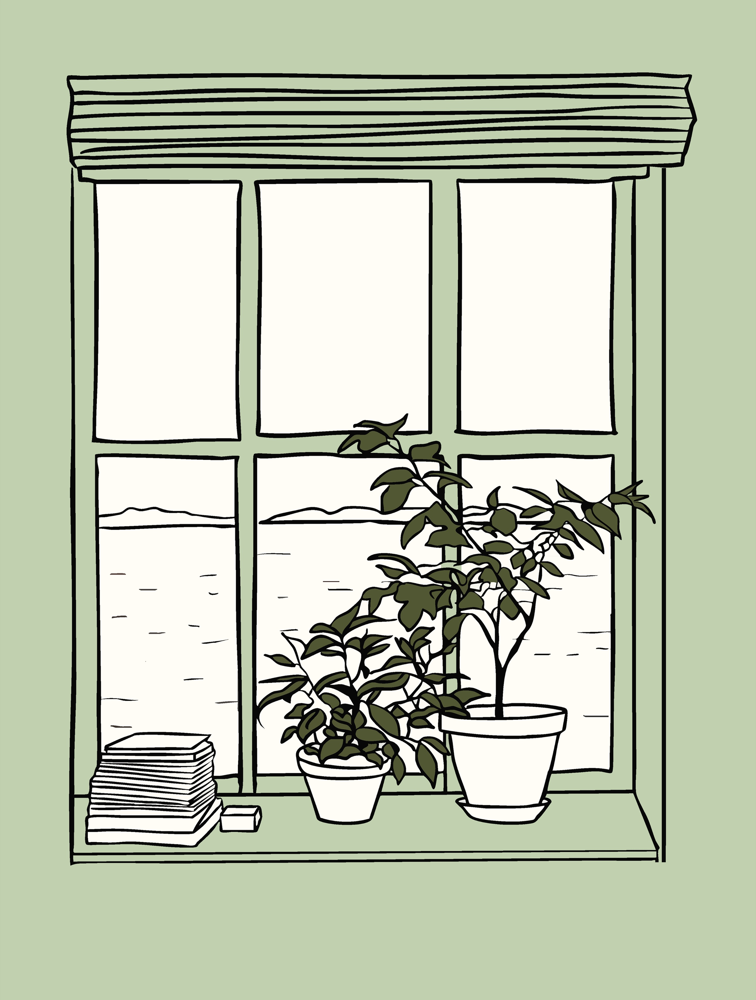
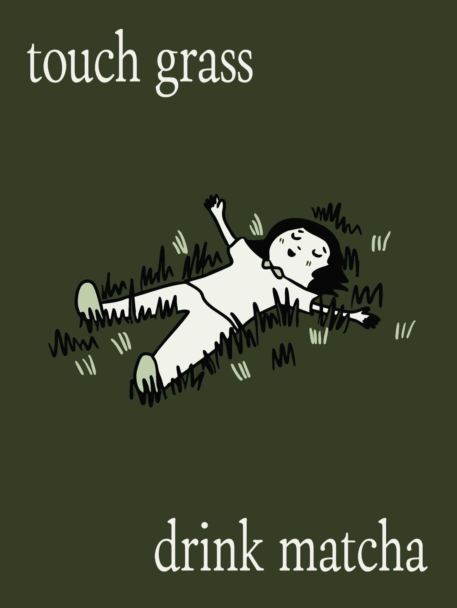
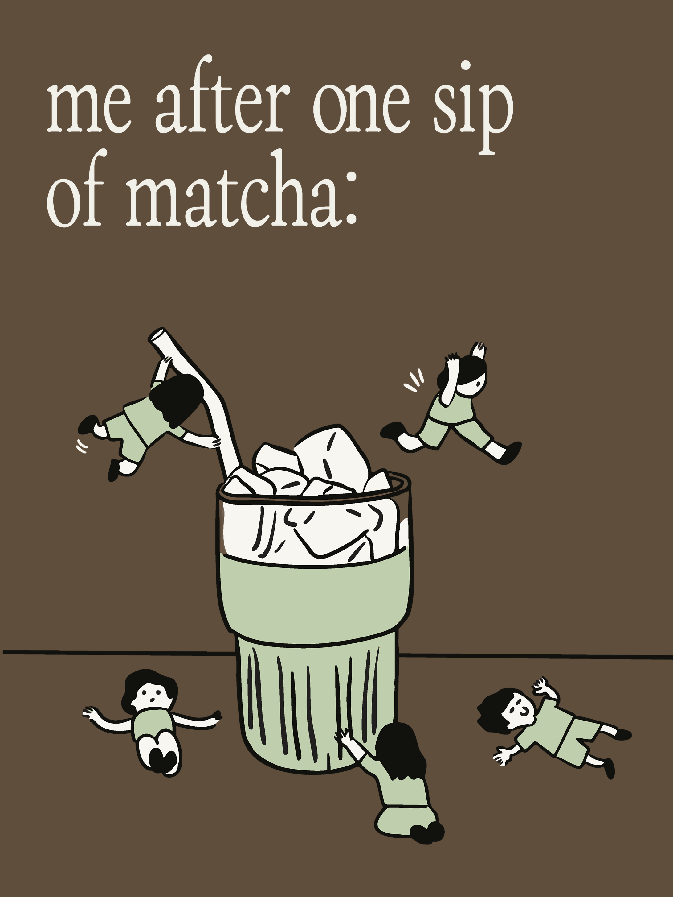
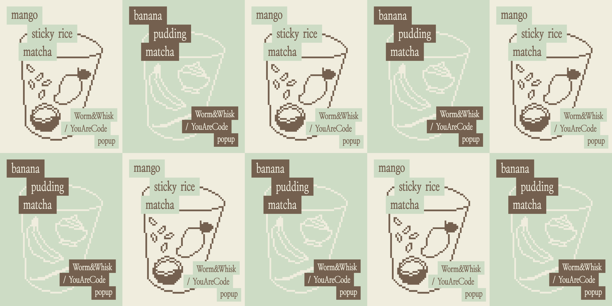
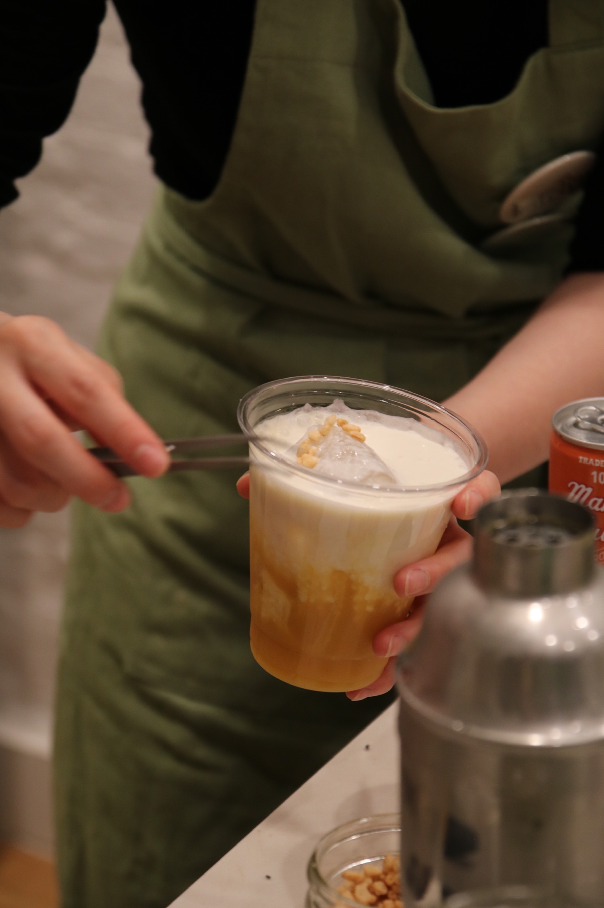

Worm&Whisk is a series of pop-ups that brings drinks, design, and community together.
It started as matcha and hojicha drinks served out of my apartment in small quantities, and has since grown into a recurring event, with the menu and brand changing a little each time.
Design
Design included art direction and social assets, along with printed collateral: postcards, business cards, stickers, buttons, menus, and signage.
Across all of it, the goal was to keep the brand silly and community-first.
Iterations
Home Cafe: the first official pop-ups under the brand, matcha-and-hojicha menu whisked to order.
You Are Code: in collaboration with a student-work exhibition of the same name.
After Hours: a speakeasy-style version with an entirely new menu.
Context
RoleCo-Creator
Duration1.5 years
SkillsArt Direction, Photographer, Social Media Management, Production, Recipe Testing
CollaboratorsNisha Tiangratanakul

Identity
The wordmark is set in ZT Bros Oskon 90s, a polished serif meant to give a small pop-up the presence of an established café.
Hand-drawn illustrations and a palette of matcha greens, hojicha brown, and cream keep it casual and welcoming.

Promotional social assets
Social posts and teasers used to promote the upcoming pop-ups.






Early look and feel
The posters designed for the first two iterations embodied the brand's playful and unserious tone.

You Are Code
For student-led exhibition You Are Code, the identity adopted a pixelated illustration style to reflect the greater technology-forward themes in the work present.

After Hours
After Hours reintroduced Worm&Whisk as an evening edition, with a new menu of cocktails and small bites. The identity shifted to match: a softer, more intimate tone, new menu, and limited ticket quantity.